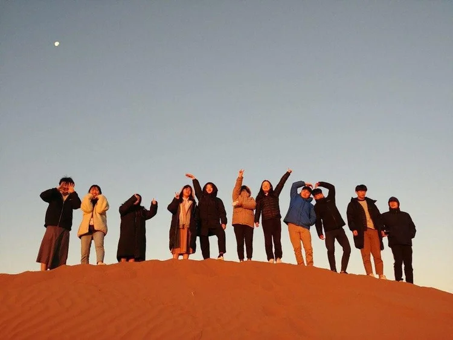
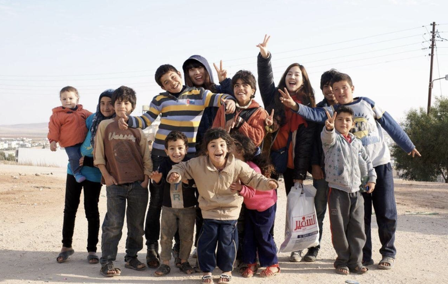
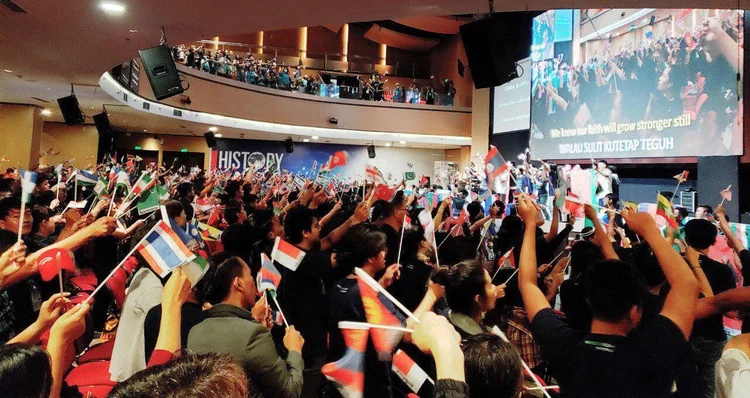

InterCP International is a non-denominational, overseas mission organization founded in 1983, whose vision is for frontier pioneering missions among the unreached people groups of the 10/40 window. InterCP International uses creative approach methods to carry out God's Great Commission in the gospel frontiers and cooperates with all evangelical mission organizations, denominations, and local churches to complete the mission of rapid global evangelization.
As of 2025, InterCP International has sent over 5,500 missionaries serving among more than 50 people groups in the 10/40 window including Asia Minor, the Caucuses, Central Asia, Persia, the Arab, Mongol-Siberia, North India, China Frontiers, Volga-Ural, Indochina, and Maghreb regions. With the central purpose of church planting, we serve these regions through ministries such as social education, medicine, area development, research, and volunteer work to carry out a holistic mission approach.
There are more than 3,100 staff serving in 460 international branches through missions education, research, mobilization, and support to train 14,000 people every year as missionary candidates for the frontier unreached people groups.

